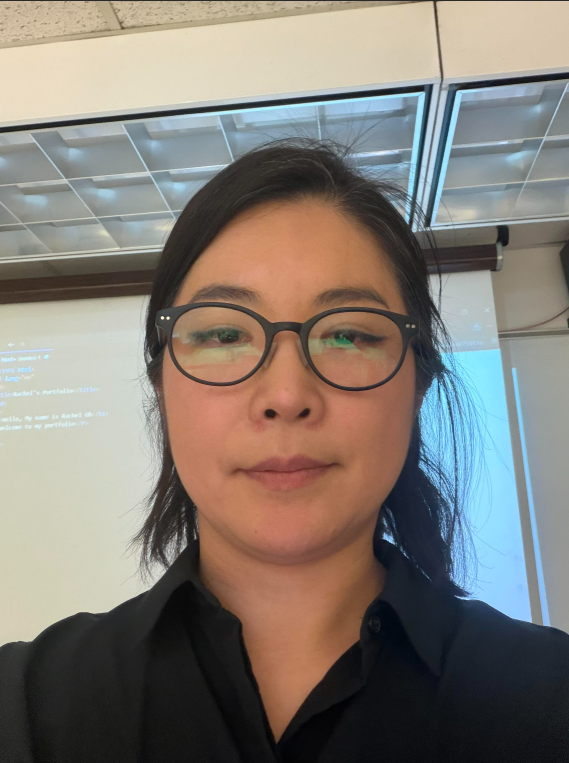

Welcome to my portfolio website for MEDPL150
My name is Rachel Jungeun Oh, and I am a visual artist and educator committed to guiding students in discovering the creative power and design.
Much of my own creative practice involves animation, projection, sound, and interactive media to explore memory, migration, and storytelling. I often draw inspiration from lullabies passed down in my family and reimagine them through digital tools, showing students how design can carry both tradition and innovation. I share these projects with students not only to model creative practice but also to encourage them to take risks, connect their personal voice to design principles, and think critically about the media they consume and create.
In MEDPL 150, my goal is to support students in learning foundational skills in photography, web design, and illustration while also helping them see design as more than just technical ability. I want students to understand design as a way to communicate meaning, build connections, and tell stories that matter. This course site will serve as a portfolio of their experiments and reflections, capturing the growth of each student as they expand their skills and develop as visual communicators.